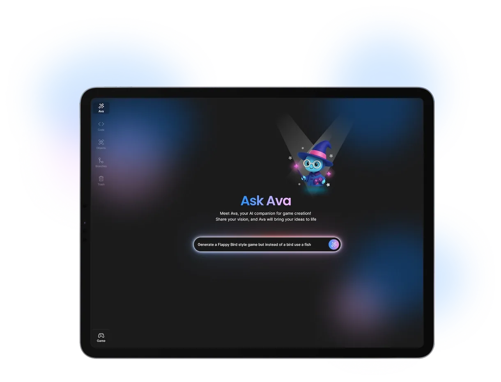
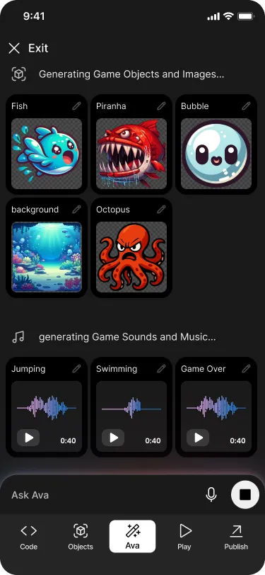
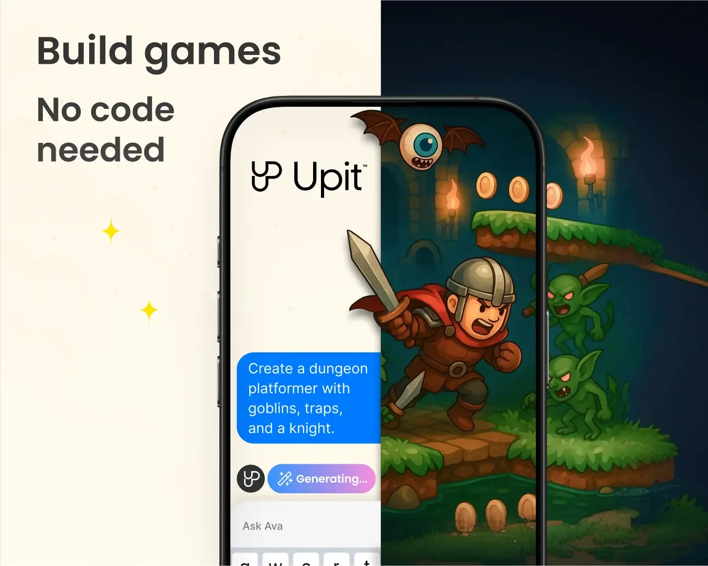
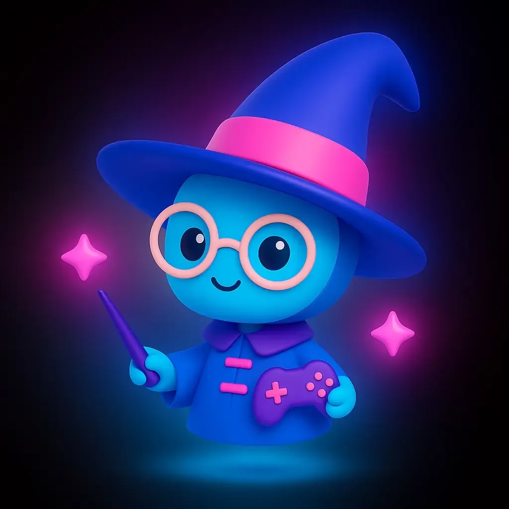
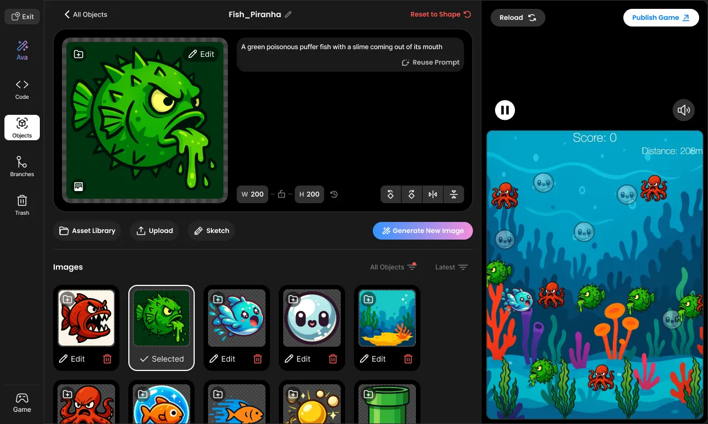
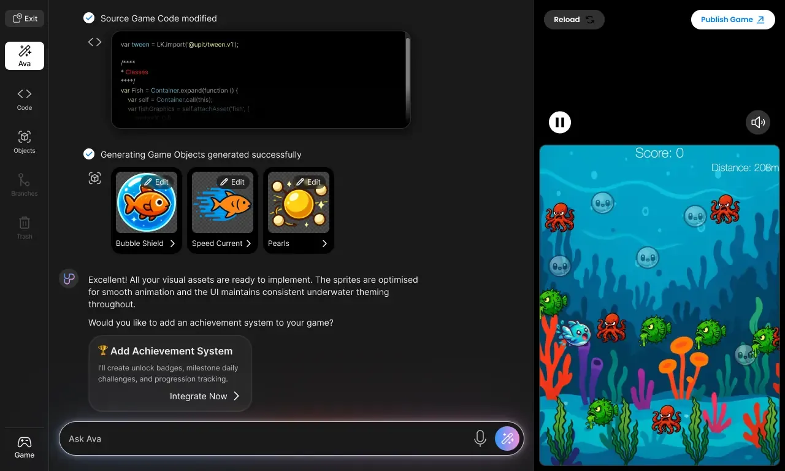

Introduction
Upit represents the future of game development. A platform where anyone can create games through natural conversation with an AI assistant named Ava. As the gaming industry becomes more accessible, the challenge was to close the gap between powerful creation capabilities and user-friendly design.
The creator side of Upit needed a complete UX/UI redesign to support the platform's vision: enabling game creation through AI assistance while maintaining the depth and functionality that creators need.
This case study explores the collaborative redesign of the creator experience, driven by a multidisciplinary team of engineers, project managers, stakeholders, and creators. I developed the project from concept to a refined interface, making AI-powered game development approachable for creators at every level.

Problems
High Barrier to Entry
Creating games traditionally requires specialised skills in coding, art, design, and sound, which most people do not possess. Even existing "accessible" platforms like Roblox still require significant technical expertise
Time-Consuming and Frustrating
Even for those with some technical ability, the process is notoriously time-consuming, frustrating, and often leads to projects being abandoned
AI Integration Challenges
Make AI assistance feel natural rather than robotic or limiting
My Role
As Senior Product Designer, I led the complete redesign of Upit's creator platform, working closely with the product team, engineering, and stakeholders to reimagine how creators interact with AI-powered game development tools.
This involved:
- Mapping the end‑to‑end flow, from ideation through asset editing, code updates and publishing, and identifying friction points.
- Translating complex AI capabilities into intuitive user interactions.
- Creating high‑fidelity prototypes and visual designs for web and mobile, then conducting user tests and design reviews with stakeholders.
- Collaborating with engineers to align the design system with the platform’s technical requirements.

Design Process
User Experience & Information Architecture
I planned the user interface and interaction flows across various platforms, prioritising a "mobile-first" approach. This included the editor's layout, core chat functionality with features like live code preview, and AI-powered tools for image editing and sound editing. I mapped key flows for AI chat prompts, image generation, code editing, and previewing. The new navigation grouped related actions, ensuring creators would never feel lost.
Planning for Iteration & Scalability
Collaborated closely with engineering to build a scalable architecture, focusing on clear planning for iterative development. This included defining achievable MVPs and mapping out phased rollouts to ensure steady progress. Designed systems to drive user retention, such as social connections and progress mechanics, as well as features supporting the creator economy like in-app purchases, revenue sharing, and future subscription models.
AI-Specific Design Innovation
Developed new interaction patterns specifically for AI-powered creation tools, including conversational UI architecture, mixed initiative patterns (balancing user control with proactive AI assistance), and multimodal interactions. This required unique approaches beyond traditional UX methodologies to create natural human-AI collaboration.
Systematic Validation and Iteration
I implemented a testing workflow combining moderated usability testing, A/B testing and behavioural analytics. This data-driven approach included design reviews, user testing, and continuous performance monitoring to ensure designs met both user needs and business objectives.
Research
To validate our assumptions and goals, I conducted competitive analyses and user interviews.
Competitor insights: I looked at Roblox, Unity and other game‑creation platforms. These tools are powerful but require substantial learning and offer little community engagement. The old editor either demanded significant technical expertise. This gap informed my focus on conversation‑driven creation.
Target user interviews: I spoke with hobbyist game creators and players. Many identified themselves as “generalists” who understood high‑level concepts but felt overwhelmed by coding and asset pipelines. They wanted the AI to scaffold the technical work while giving them the freedom to iterate on ideas.
Analytics & Tests
The redesign was tested through internal testing sessions and an external beta with 50+ creators.
Key metrics included:
| METRIC | OLD EDITOR | NEW DESIGN | IMPROVEMENT |
|---|---|---|---|
| Time to first playable game | ~45 min (average) | 15 min | +66 % (AI handles code and assets) |
| Actions required to publish | ≈20 clicks across separate pages | 6 steps in one flow | +70 % |
| Task success rate for non‑technical users | 40 % could complete | 85 % | +45 % |
| Number of games created per tester | 1.2 | 3.5 | +190% |
- Creation Rate
- 3x
- Published Games
- +191%
- Daily active creators
- 5x
- Creator D1 Retention
- +43%
Metrics
Design Results
Testers reported that the conversational interface reduced anxiety around coding.
Many said that seeing the code being generated in real time made them feel “in control” and offered educational value.
On mobile, the compact navigation and simplified asset editor received positive feedback for being intuitive and touch‑friendly.

Why Ava
The new journey begins with a full‑screen “Ask Ava” screen, where users simply describe the game they want to build.
A friendly illustration and explanatory text communicate that Ava is their AI companion. This reduces the intimidation factor and sets the tone for a playful creation process.
Once the user submits a prompt, Ava generates a game design document and starts streaming the source code, assets and sounds. The chat interface shows progress indicators and options to stop or adjust generation.
The AI’s responses are written as if a designer were explaining their decisions, making the process feel collaborative. Testers appreciated the clear progress feedback and the ability to intervene if the result wasn’t what they expected.


Takeaways
Designing the creator side of Upit reinforced several takeaways:
- Guided conversation approach – By allowing users to speak to Ava as they would to a collaborator, we lowered the learning curve and increased engagement.
- Focus on casual gamers – Empowering these users meant prioritising simplicity over power. I deliberately limited advanced features to keep the interface approachable while leaving room for future expert tools.
- Cross‑functional collaboration – This redesign involved close collaboration between design, engineering and AI researchers. Aligning on technical constraints early prevented rework and ensured a polished experience.
- Metrics drive iteration – Tracking quantitative metrics like time to create a game and task success rate informed design decisions. Qualitative feedback from the beta brought many refinements such as adding progress indicators and simplifying navigation.
By turning the complex process of coding into a guided conversation, Upit enables more people to bring their ideas to life fulfilling the company’s vision of empowering everyone to create, play and build communities through games.